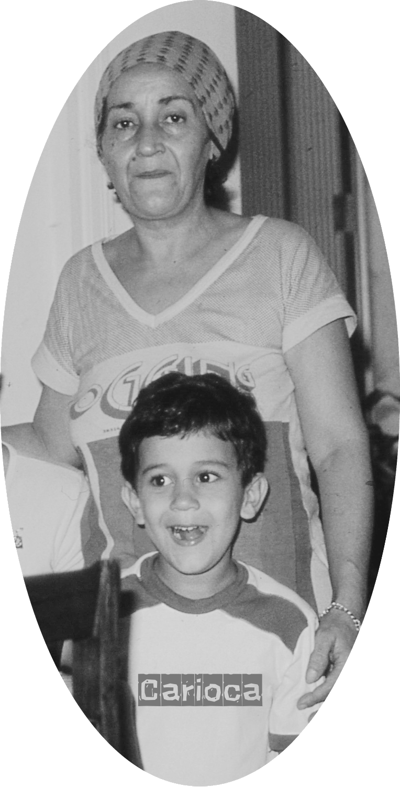

Blog / Posts
In memory of Maria Socorro Alencar de Souza
May 1935 – October 2004
A Tribute to Ground Zero
"Son, a simple rule for life: wherever you go, leave it better than you found it."
As an opening section for this Blog page, I pay my tributes to my mom. As you can see in her teachings above, she'd given me a directive: "…wherever I go, leave it better than I found it." At the surface, it is a rule-based idea, as many moms probably would. In those times, my grasp was narrow-minded — she wanted me to make the bed, carry groceries, do the dishes, and do other chores. But it has been a guiding principle I strive to maintain anywhere I go. You can know more about my other principles here.
Besides my tribute to her, it is a praise to the wisdom of all mothers, sometimes forgotten, sometimes in the shadows of others, but certainly one of the purest loves we can find on this planet.
The origin
After many years living by this mantra, I wanted to know whether my mom had gotten it from a quote she had heard somewhere. I decided many years ago I would search, and I did again as I reviewed the information for this post. My research concern was never to find a quote attributed to her; she was not the scholarly type, even though she was hard on me on educational matters. My goal was to understand whether she had come to this idea on her own or had heard it from someone else.
I may not know for sure, maybe she did, but it seems unlikely to me. The closest known form is from the founder of the Scout Movement, in his Last Message to Scouts:
"Try and leave this world a little better than you found it, and when your turn comes to die, you can die happy in feeling that at any rate you have not wasted your time but have done your best."
— Robert Baden-Powell
Although the Scout movement has a long history in Brazil, in those times before the internet, English translations into Brazilian Portuguese of any book were slow, and Baden-Powell's Scouting for Boys was not a popular title outside scout circles, let alone the translation of the letter. Still, it is possible my mom had some connection to this quote, but I'd rather believe my alternative theory, as it seems more plausible.
I was a late third child, but the first and only in her second marriage. She was 41 when I was born. Besides bringing me into this life, she also saved me in the hospital crib just a day or so after my birth — it's her account of the event. The fact is that it cost her new stitches in the C-section. Because she was still in the recovery period, and she saw me choking, and the nurse could not hear her, so she stood up from the bed and came to attend to me. She is my first hero. And her teachings were more likely born from a life fully lived, than a potential plagiarism of Baden-Powell's idea.
My peace arrives at the intersection where Baden-Powell's statement meets my mom's formulated rule for me. They were both Christians, perhaps not the same type, and certainly not in the same walk of life. But both passed this teaching to the next generation in a way traceable to the Bible's principle of stewardship — caring for what is entrusted to you. Before I lose you to religion, I must remind you that this post is about a mother's wisdom. I believe she had a point, and I will always value wisdom regardless of its source.
The foundations
As a son (or daughter), many of us may try to understand our parents in their own terms, if not sooner, then later. And so I tried. The closest biblical foundation to this teaching is probably Genesis 2:15:
"And the Lord God took the man, and put him into the garden of Eden to dress it and to keep it."
Genesis 2:15
This verse presents human beings not as passive occupants of the world, but as caretakers. The garden is "found," so to speak, but the human vocation is to work it, guard it, cultivate it, and preserve it. So, from a biblical perspective, "leave it better than you found it" echoes that you are responsible for what has been entrusted to your care. This applies not only to land or nature, but also to homes, communities, workplaces, relationships, and institutions.
The second main reference is well-known — Jesus summarizes the moral life with the command:
"…Thou shalt love thy neighbour as thyself."
Matthew 22:39
To leave a place better than you found it is a practical expression of love. It means asking: "How will my presence affect the people who come after me?" That is very close to the biblical ethic of neighbor-love. You are not merely avoiding harm; you are actively seeking the good of others.
Third is about doing good wherever one has the opportunity. A very close New Testament connection:
"Let us not grow weary of doing good… So then, as we have opportunity, let us do good to everyone…"
Galatians 6:9–10
This is highly aligned with the phrase "wherever you go" — which becomes, biblically: as you have the opportunity, do good. The Bible frames goodness not only as a private virtue but as something visible, practical, and beneficial to others.
Peace and repair: being a restorer, not a consumer. Another strong connection:
"You shall be called the repairer of the breach, the restorer of streets to dwell in."
Isaiah 58:12
This is perhaps one of the most beautiful biblical parallels. The quote "leave it better than you found it" has a restorative quality — it assumes the world is often damaged, neglected, or incomplete, and that a person's role is to repair, restore, and improve. This is more than cleanliness or politeness. It is a philosophy of life:
This has been especially important for me. In my career, I have been a physical therapist, an ergonomist, a safety professional, and more holistically someone who seeks and teaches well-being.
Another keen idea is fruitfulness: your life should produce good beyond yourself. Jesus says:
"You will recognize them by their fruits."
Matthew 7:16
And in John 15, Jesus repeatedly speaks about bearing fruit. In biblical language, a good life is not measured only by intention, belief, or personal success. It is measured by the fruit it produces. So the quote can be understood as a "fruit test":
The summit is the Good Samaritan: leave the person better than you found him. The parable of the Good Samaritan in Luke 10:25–37 is one of the strongest narrative examples. The Samaritan encounters a wounded man and does not merely feel compassion — he acts. He bandages wounds, transports him, pays for care, and ensures follow-up.
In modern language, the Samaritan does exactly this: he leaves the person better than he found him. This is probably the most concrete biblical story that embodies the quote.
To close, never forget that work is service. Therefore, whatever you do, do it well.
"Whatever you do, work heartily, as for the Lord…"
Colossians 3:23
This connects the quote to daily work. Whether one is cleaning a room, leading a team, raising children, treating a patient, writing a policy, or visiting a workplace, the biblical idea is that ordinary actions can carry sacred responsibility. "Leave it better than you found it" becomes a rule of daily vocation: do not merely pass through. Contribute.
The conclusion
Wrapping up, the quote is not biblical in wording, but it is deeply biblical in spirit. It condenses several biblical principles into one practical rule — a checklist for whoever wants to keep track of all ideas:
A biblically framed version of the quote could be: "Wherever God places you, cultivate, protect, repair, and bless what is around you." Or, more simply: "Wherever you go, be a steward, a neighbor, and a restorer."
That is the first principle I live by — Namaste! 🙏🏽
“Filho, uma regra simples de vida: Por onde você passar, deixe melhor do que encontrou.”
"Son, a simple rule for life: wherever you go, leave it better than you found it."
— Maria Socorro Alencar de Souza · My mother